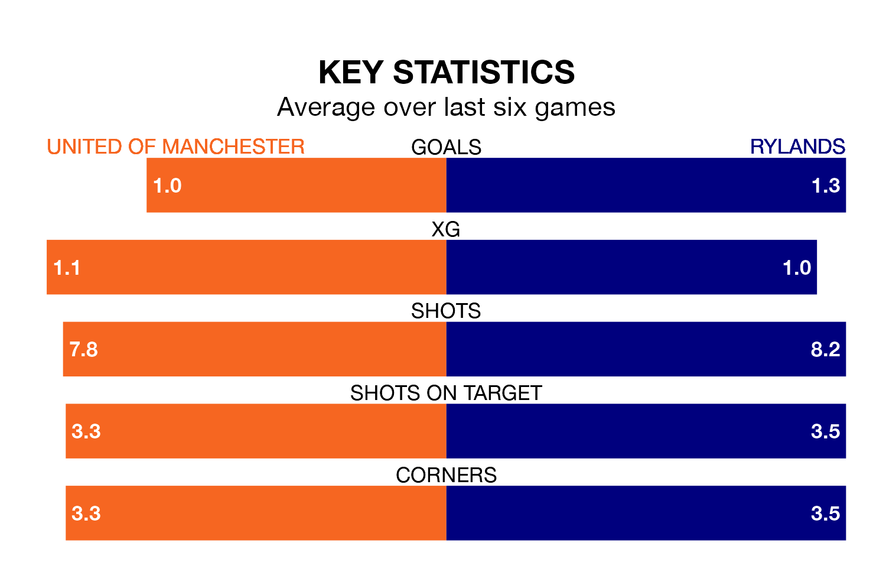

Rylands travel to United of Manchester on Saturday in the Northern Premier League.
The visitors come into the game on the back of a win in their last match, having beaten Matlock Town 1-0 at home.
F.C. United, meanwhile, lost their last match, 1-0 against Radcliffe Borough.
Rylands are fifth in the table after 29 games, of which they have won 14 and drawn 11, earning 53 points.
United of Manchester are nine places behind the visitors in 14th, with 11 wins and four draws putting them on 37 points.
With 42 goals in 29 games so far this season, F.C. United are scoring at below the league average rate with 1.4 goals per game. And they are conceding more than average, letting in 56 goals at a rate of 1.9 per game.
Rylands are also below average scorers, with 1.6 goals per game, compared to a league average of 1.7. They have conceded 1.1 goals per game.
The home team are in disappointing form in the Northern Premier League, with two wins and four losses from their last six games.
With two wins and three draws over that period, Rylands's form is better – they have taken nine points from 18, compared to United of Manchester's six.
In the last five years, United of Manchester and Rylands have played each other on four occasions. Rylands won two of them and they drew twice.
On average, F.C. United scored 0.5 goals and Rylands 1.8 in those matches.
Their last meeting was on September 26, when Rylands won 1-0 at home.
Updated: 13:04 (UTC), 16/02/24